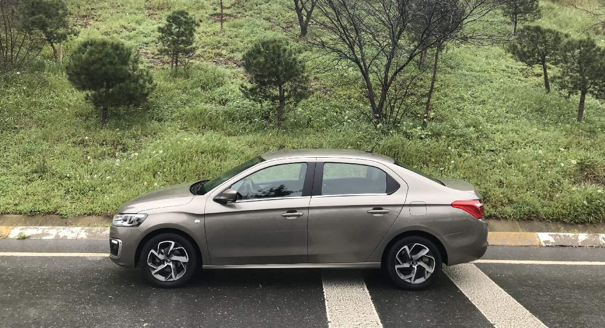
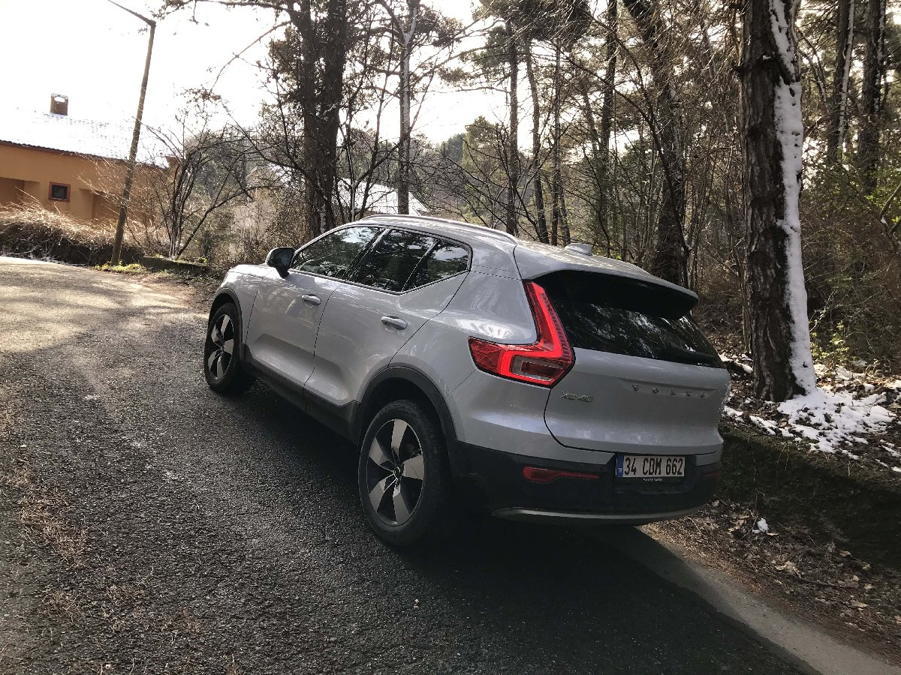

BMW ARABALAR
TÜM dünyada BMW satışlarının yüzde 25'ini oluşturan 3 Serisi, Türkiye'de de büyük ilgi görüyor. Borusan Otomotiv İcra Kurulu Başkanı Hakan Tiftik, eylülden itibaren satışa başladıkları yeni BMW 3 Serisi'nin çok kısa sürede büyük talep gördüğünü söyledi.Temmuzdan itibaren 750 adet satış gerçekleştirdiklerini ifade eden Tiftik, yıl sonu hedefinin toplam 2 bin adet olduğunu kaydetti. 7'inci jenerasyon BMW 3 Serisi Türkiye'de 337 bin 900 TL'den başlayan fiyatlarla satılıyor.
CİTROEN ARABALAR
İlk defa 2002 yılında üretilen otomobil Avrupa’ya ve ülkemize hiç gelmemişti. Çin’de üretilen ve Asya pazarına satılan bu model Xsara ve Saxo modellerinden alınan ortak parçalara sahipti.Avrupa’ya ve ülkemize ilk defa 2011 yılında gelen C-Elysee, 2017 yılında güzel bir makyaj operasyonu geçirip, modern teknolojilere ve daha şık bir görünüme kavuştu. Benim de kullandığım test otomobili en güncel C-Elysee. Otomobilin öncelikle satış adetinden bahsetmek istiyorum. Özellikle filo pazarının genişlemesinden faydalanan modellerden biri olduğunu belirtmemde fayda var. Geride bıraktığımız 2017 yılında otomobil 19 bin adetin üzerinde satış rakamına erişerek markanın en çok satan modeli olma unvanına erişti. Türkiye’de de en çok satılan modeller arasında rahatlıkla ilk 10’a girebiliyor. Bu önemli detaydan bahsettikten sonra isterseniz aracın sürüş izlenimine geçelim.
Dışarıdan C-Elysee’yi gördüğünüzde otomobilin yeni siyah zeminli farları ve eskiye göre daha agresif olan ön tampon tasarımı hemen fark ediliyor. Makyaj ve üst donanım paketiyle gelen yeni tasarımlı jantlar otomobile daha sportif bir hava katmış durumda. Aracın arkasına baktığınızda ise led teknolojili stoplar farklılığı hemen gösteriyor. Aracın boyutlarından bahsetmem gerekirse C-Elysee, 4419 mm. uzunluğa, 1748 mm. genişliğe ve 1466 mm. yüksekliğe sahip. Toplam ağırlığı ise 1090 kg. Citroen C-Elysee’nin sürücü kapısını açıp içine geçtiğinizde ise Apple Car Play ve Android Auto destekli multimedya ekranı ve hemen altındaki dijital klima kontrol ünitesi karşınıza çıkıyor. Özellikle yüksek satış adetini yakalaması için tasarlanan bir otomobilde sunulan dijital klima kontrol ünitesi oldukça iyi bir detay olarak dikkat çekiyor. Aracın direksiyonu sadece yukarı ve aşağı doğru ayarlanabiliyor, derinlik ayarı ne yazık ki yok. Direksiyonun arkasında kalan gösterge tablosuna dikkatli bir şekilde baktığınızda ise spor bir saat kadar şık olduğunu fark ediyorsunuz. ullandığım test otomobilinde uzun zamandır yakından tanıdığımız 1.6 litrelik 100 beygir gücündeki BlueHDi motor otomobili hareket ettiriyor. Bu motor 254 Nm tork üretim kapasitesine de sahip. 5 ileri manuel şanzıman ise aracın gücünü aktarma görevini yerine getiriyor.
VOLVO ARABALAR
Markanın giriş seviyesi SUV modeli olan XC40, diğer modellere göre olan köşeli ve küt tasarımıyla onu ilk gördüğünüz andan itibaren dikkatinizi üzerine çekmeyi başarıyor. Önden araca baktığınızda markanın imzası niteliğinde olan ve farların tam ortasında bulunan kılıç biçimli gündüz ledleri size merhaba diyor. Kesik biçimde tasarlanmış olan burun yapısı otomobilin SUV karakteriyle uyum içinde. Aracın yanına geçtiğinizde ise 19 inç boyutunda olan, 5 kollu jantlar ve gözünüzün takılmamasına sebep olan temiz tasarımı içinizi rahatlatıyor. Otomobilin arkasına geçtiğinizde ise arka tarafın tam ortasından başlayıp tavana kadar uzayan stoplar size merhaba diyor. Bagaj kapağının tam ortasında yer alan Volvo yazısı ve sağ, sol köşeler olmak üzere konumlandırılan model ve donanım kodları bagaj kapağını dolduruyor. Aracın arka tamponu 2 parçadan oluşuyor. Alt kısım mat siyah renkte iken üst kısım gövde renginde. Gelelim XC40’ın boyutlarına; 4425 mm uzunluk, 1863 mm genişlik ve 1652 mm yükseklik aracın temel ölçüler olarak belirtilmiş. XC40’ın aks mesafesi ise 2702 mm uzunluğunda.
T3 motor kodlu olan test aracımızın toplam ağırlığı ise 1625 kg. Ayrıca otomobilin bagaj hacmi de en az 460 litre olarak belirtilmiş. Aracın içine göz attığınızda ise Volvo markasına aşinaysanız tanıdık bir ortamla karşılaşıyorsunuz. Çok şık tasarlanmış ön koltukar, dikine yerleştirilmiş ve bir cep telefonu hassasiyetine sahip olan dokunmatik multimedya ekranı, tamamen dijital gösterge tablosu aracın içine girer girmez fark ettiğiniz detaylar oluyor. Sürücü koltuğuna oturduğunuzda ise 3 kollu direksiyonu markanın diğer modellerinde de hatırlıyorsunuz. Arka koltuklara göz attığınızda otomobilin sahip olduğu 2700 mm’lik aks mesafesinin işe yaradığını anlıyorsunuz. Cam tavanlı olan test aracımızın içindeki ferahlık bu donanım sayesinde bir üst seviyeye çıkmıştı. Arka koltuktaki yolcularınız rahatlıkla 3 yetişkin olarak bile seyahat edebilecek genişliğe sahip. Otomobilin orta konsolunda yer alan vites kolu, getirmek istediğiniz kademeye iki emir ile geldiği için alışmakta başta zorluk çekebilirsiniz. Diğer modellerde vites kolunun hemen yanında hatırladığımız Drive Mode yani sürüş modu düğmesi bu defa multimedya ekranının hemen altında yer alıyor. Volvo XC40’ın motor kaputunu kaldırdığınızda ise karşınıza 3 silindirli, 1.5 litrelik, turbo benzinli motor çıkıyor. Bu motor 163 beygir güç ve 280 Nm tork üretiyor.